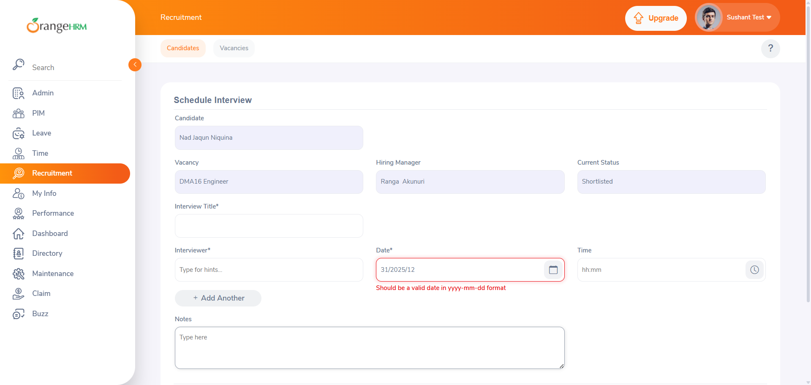
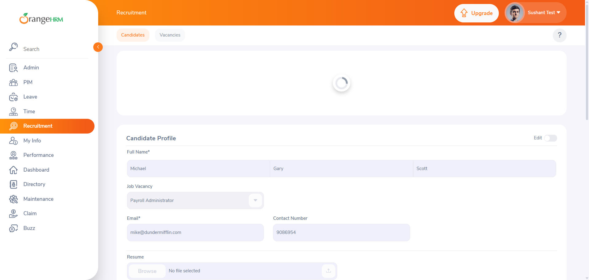
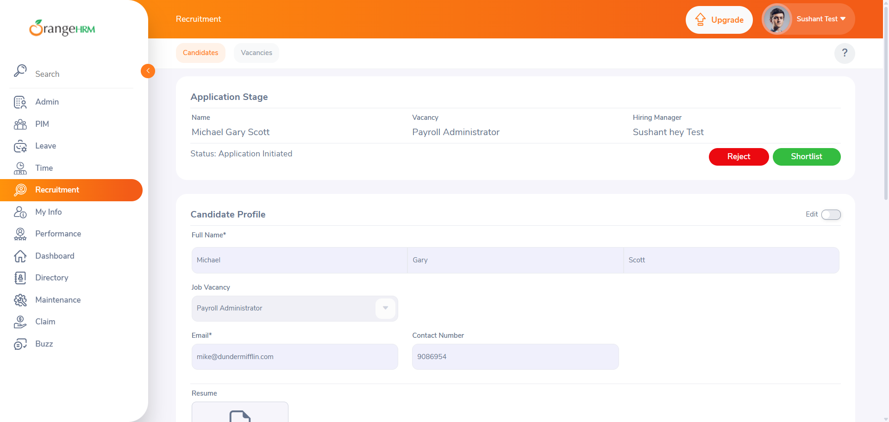
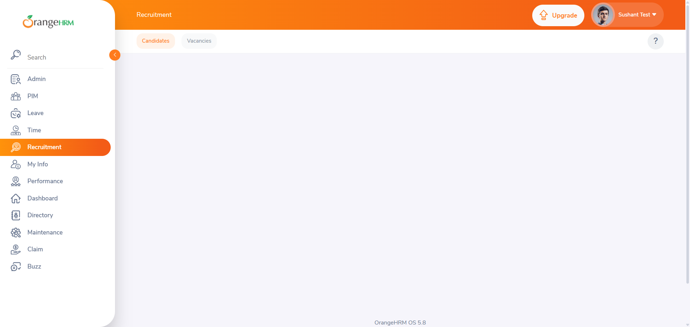
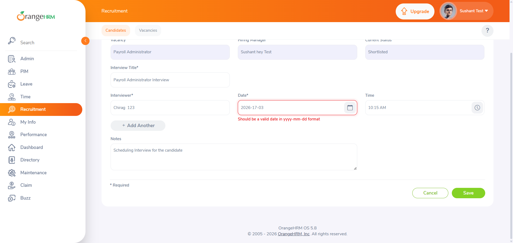

-
Add new Candidate and validate its behaviour
11:12:31 pm / 00:14:18:962 Fail
Add new Candidate and validate its behaviour
03.16.2026 11:12:31 pm 03.16.2026 11:26:50 pm 00:14:18:962 · #test-id=1FailValidate if user can enter date of format: "" in date field of Schedule Interview screen and gets appropriate error message only if the format is invalid FailValidate if user can enter date of format: "yyyy-dd-mm" in date field of Schedule Interview screen and gets appropriate error message only if the format is invalidhooks.Hooks.setup()Given User Logs in with Credentials and Navigates to Recruitment SectionStep skippedWhen User filter Candidate list by "Shortlisted" CandidatesStep skippedAnd User clicks view iconStep skippedAnd Validate if Candidate details screen is visibleStep skippedAnd Navigate to Schedule Interview ScreenStep skippedThen User enters Date of format: "yyyy-dd-mm" and validates if error message is displayed if the entered date is invalidStep skippedFailValidate if user can enter date of format: "mm-dd-yyyy" in date field of Schedule Interview screen and gets appropriate error message only if the format is invalidhooks.Hooks.setup()Given User Logs in with Credentials and Navigates to Recruitment SectionStep skippedWhen User filter Candidate list by "Shortlisted" CandidatesStep skippedAnd User clicks view iconStep skippedAnd Validate if Candidate details screen is visibleStep skippedAnd Navigate to Schedule Interview ScreenStep skippedThen User enters Date of format: "mm-dd-yyyy" and validates if error message is displayed if the entered date is invalidStep skippedFailValidate if user can enter date of format: "yyyy/dd/mm" in date field of Schedule Interview screen and gets appropriate error message only if the format is invalidhooks.Hooks.setup()Given User Logs in with Credentials and Navigates to Recruitment SectionStep skippedWhen User filter Candidate list by "Shortlisted" CandidatesStep skippedAnd User clicks view iconStep skippedAnd Validate if Candidate details screen is visibleStep skippedAnd Navigate to Schedule Interview ScreenStep skippedThen User enters Date of format: "yyyy/dd/mm" and validates if error message is displayed if the entered date is invalidStep skippedFailValidate if user can enter date of format: "mm/dd/yyyy" in date field of Schedule Interview screen and gets appropriate error message only if the format is invalidhooks.Hooks.setup()Given User Logs in with Credentials and Navigates to Recruitment SectionStep skippedWhen User filter Candidate list by "Shortlisted" CandidatesStep skippedAnd User clicks view iconStep skippedAnd Validate if Candidate details screen is visibleStep skippedAnd Navigate to Schedule Interview ScreenStep skippedThen User enters Date of format: "mm/dd/yyyy" and validates if error message is displayed if the entered date is invalidStep skippedFailValidate if user can enter date of format: "dd-yyyy-mm" in date field of Schedule Interview screen and gets appropriate error message only if the format is invalidGiven User Logs in with Credentials and Navigates to Recruitment SectionWhen User filter Candidate list by "Shortlisted" CandidatesAnd User clicks view iconAnd Validate if Candidate details screen is visiblehooks.Hooks.addScreenshot(io.cucumber.java.Scenario)Step: Validate if Candidate details screen is visibleScreenshot: Validate if Candidate details screen is visibleAnd Navigate to Schedule Interview ScreenThen User enters Date of format: "dd-yyyy-mm" and validates if error message is displayed if the entered date is invalidhooks.Hooks.addScreenshot(io.cucumber.java.Scenario)Step: User enters Contact Number of format: dd-yyyy-mm and validates if error message is displayed if the entered Contact Number is invalidScreenshot: User enters Contact Number of format: dd-yyyy-mm and validates if error message is displayed if the entered Contact Number is invalidFailValidate if user can enter date of format: "dd/yyyy/mm" in date field of Schedule Interview screen and gets appropriate error message only if the format is invalidGiven User Logs in with Credentials and Navigates to Recruitment SectionWhen User filter Candidate list by "Shortlisted" CandidatesAnd User clicks view iconAnd Validate if Candidate details screen is visiblehooks.Hooks.addScreenshot(io.cucumber.java.Scenario)Step: Validate if Candidate details screen is visibleScreenshot: Validate if Candidate details screen is visibleAnd Navigate to Schedule Interview ScreenThen User enters Date of format: "dd/yyyy/mm" and validates if error message is displayed if the entered date is invalidhooks.Hooks.addScreenshot(io.cucumber.java.Scenario)Step: User enters Contact Number of format: dd/yyyy/mm and validates if error message is displayed if the entered Contact Number is invalidScreenshot: User enters Contact Number of format: dd/yyyy/mm and validates if error message is displayed if the entered Contact Number is invalid
FailValidate if user can enter date of format: "ddmmyyyy" in date field of Schedule Interview screen and gets appropriate error message only if the format is invalidhooks.Hooks.setup()Given User Logs in with Credentials and Navigates to Recruitment SectionStep skippedWhen User filter Candidate list by "Shortlisted" CandidatesStep skippedAnd User clicks view iconStep skippedAnd Validate if Candidate details screen is visibleStep skippedAnd Navigate to Schedule Interview ScreenStep skippedThen User enters Date of format: "ddmmyyyy" and validates if error message is displayed if the entered date is invalidStep skippedFailValidate if user can enter date of format: "mmddyyyy" in date field of Schedule Interview screen and gets appropriate error message only if the format is invalidGiven User Logs in with Credentials and Navigates to Recruitment SectionWhen User filter Candidate list by "Shortlisted" CandidatesAnd User clicks view iconAnd Validate if Candidate details screen is visiblehooks.Hooks.addScreenshot(io.cucumber.java.Scenario)Step: Validate if Candidate details screen is visibleScreenshot: Validate if Candidate details screen is visibleAnd Navigate to Schedule Interview ScreenThen User enters Date of format: "mmddyyyy" and validates if error message is displayed if the entered date is invalidhooks.Hooks.addScreenshot(io.cucumber.java.Scenario)Step: User enters Contact Number of format: mmddyyyy and validates if error message is displayed if the entered Contact Number is invalidScreenshot: User enters Contact Number of format: mmddyyyy and validates if error message is displayed if the entered Contact Number is invalidFailValidate if user can enter date of format: "yyyymmdd" in date field of Schedule Interview screen and gets appropriate error message only if the format is invalidhooks.Hooks.setup()Given User Logs in with Credentials and Navigates to Recruitment SectionStep skippedWhen User filter Candidate list by "Shortlisted" CandidatesStep skippedAnd User clicks view iconStep skippedAnd Validate if Candidate details screen is visibleStep skippedAnd Navigate to Schedule Interview ScreenStep skippedThen User enters Date of format: "yyyymmdd" and validates if error message is displayed if the entered date is invalidStep skippedFailValidate if user can enter date of format: "mmyyyydd" in date field of Schedule Interview screen and gets appropriate error message only if the format is invalidhooks.Hooks.setup()Given User Logs in with Credentials and Navigates to Recruitment SectionStep skippedWhen User filter Candidate list by "Shortlisted" CandidatesStep skippedAnd User clicks view iconStep skippedAnd Validate if Candidate details screen is visibleStep skippedAnd Navigate to Schedule Interview ScreenStep skippedThen User enters Date of format: "mmyyyydd" and validates if error message is displayed if the entered date is invalidStep skippedFailValidate if user can enter date of format: "dd-mm-yyyy" in date field of Schedule Interview screen and gets appropriate error message only if the format is invalidGiven User Logs in with Credentials and Navigates to Recruitment SectionWhen User filter Candidate list by "Shortlisted" CandidatesAnd User clicks view iconAnd Validate if Candidate details screen is visiblehooks.Hooks.addScreenshot(io.cucumber.java.Scenario)Step: Validate if Candidate details screen is visibleScreenshot: Validate if Candidate details screen is visibleAnd Navigate to Schedule Interview ScreenThen User enters Date of format: "dd-mm-yyyy" and validates if error message is displayed if the entered date is invalidhooks.Hooks.addScreenshot(io.cucumber.java.Scenario)Step: User enters Contact Number of format: dd-mm-yyyy and validates if error message is displayed if the entered Contact Number is invalidScreenshot: User enters Contact Number of format: dd-mm-yyyy and validates if error message is displayed if the entered Contact Number is invalidFailUser Validates adding a New Candidate and deleting the newly added candidateFailUser Validates adding a New Candidate and deleting the newly added candidateGiven User Logs in with Credentials and Navigates to Recruitment SectionWhen User Navigates to Add Candidate formThen User fill all Mandatory fields for user with first name as "Michael"And User fill all Non-Mandatory fields for user with first name as "Michael"And User Saves the formAnd Validate if Candidate details screen is visiblehooks.Hooks.addScreenshot(io.cucumber.java.Scenario)Step: Validate if Candidate details screen is visibleScreenshot: Validate if Candidate details screen is visibleAnd Validate if the status is "Status: Application Initiated"hooks.Hooks.addScreenshot(io.cucumber.java.Scenario)Step: Validate if the status is Status: Application InitiatedScreenshot: Validate if the status is Status: Application Initiated
And Capture the data from the screenAnd Validate if details in the screen are as per the form filledhooks.Hooks.addScreenshot(io.cucumber.java.Scenario)Step: Validate if details in the screen are as per the form filledScreenshot: Validate if details in the screen are as per the form filled
And Validate the Candidate History for "Added" candidateStep skippedAnd Validate the Candidate History for "Application Initiated" candidateStep skippedAnd Navigate to Candidates sectionStep skippedAnd Check if candidate name appears in Candidate filterStep skippedAnd Filter Candidate list by newly added candidate nameStep skippedAnd Validate if the newly added candidate is displayed in Candidate list tableStep skippedAnd Delete the Newly added candidateStep skippedAnd Check if Newly added candidate name no longer appears in Candidate filterStep skippedFailValidate candidate rejection from Application Initiated stage and Candidate HistoryFailValidate candidate rejection from Application Initiated stage and Candidate HistoryGiven User Logs in with Credentials and Navigates to Recruitment SectionWhen User Navigates to Add Candidate formThen User fill all Mandatory fields for user with first name as "Dwight"And User fill all Non-Mandatory fields for user with first name as "Dwight"And User Saves the formAnd Validate if Candidate details screen is visiblehooks.Hooks.addScreenshot(io.cucumber.java.Scenario)Step: Validate if Candidate details screen is visibleScreenshot: Validate if Candidate details screen is visible
And Validate if the status is "Status: Application Initiated"Step skippedAnd "Reject" the CandidateStep skippedAnd Validate if Candidate details screen is visibleStep skippedAnd Validate if the status is "Status: Rejected"Step skippedAnd Validate the Candidate History for "Rejected" candidateStep skippedAnd Navigate to Candidates sectionStep skippedAnd Check if candidate name appears in Candidate filterStep skippedAnd Filter Candidate list by newly added candidate nameStep skippedAnd Check if the status of the candidate is "Rejected"Step skippedAnd Delete the Newly added candidateStep skippedFailValidate if user can Shortlist a candidate, reject the candidate from shortlisted stage and validate the candidate HistoryFailValidate if user can Shortlist a candidate, reject the candidate from shortlisted stage and validate the candidate Historyhooks.Hooks.setup()Given User Logs in with Credentials and Navigates to Recruitment SectionStep skippedWhen User Navigates to Add Candidate formStep skippedThen User fill all Mandatory fields for user with first name as "James"Step skippedAnd User fill all Non-Mandatory fields for user with first name as "James"Step skippedAnd User Saves the formStep skippedAnd Validate if Candidate details screen is visibleStep skippedAnd Validate if the status is "Status: Application Initiated"Step skippedAnd "Shortlist" the CandidateStep skippedAnd Validate if Candidate details screen is visibleStep skippedAnd Validate if the status is "Status: Shortlisted"Step skippedAnd Validate the Candidate History for "Shortlisted" candidateStep skippedAnd Navigate to Candidates sectionStep skippedAnd Check if candidate name appears in Candidate filterStep skippedAnd Filter Candidate list by newly added candidate nameStep skippedAnd Check if the status of the candidate is "Shortlisted"Step skippedAnd User clicks view iconStep skippedAnd "Reject" the CandidateStep skippedAnd Validate if Candidate details screen is visibleStep skippedAnd Validate if the status is "Status: Rejected"Step skippedAnd Validate the Candidate History for "Rejected" candidateStep skippedAnd Navigate to Candidates sectionStep skippedAnd Check if candidate name appears in Candidate filterStep skippedAnd Filter Candidate list by newly added candidate nameStep skippedAnd Check if the status of the candidate is "Rejected"Step skippedAnd Delete the Newly added candidateStep skippedFailValidate if user can Schedule Interview for a candidate, reject the candidate from Interview Scheduled stage and validate the candidate HistoryFailValidate if user can Schedule Interview for a candidate, reject the candidate from Interview Scheduled stage and validate the candidate Historyhooks.Hooks.setup()Given User Logs in with Credentials and Navigates to Recruitment SectionStep skippedWhen User Navigates to Add Candidate formStep skippedThen User fill all Mandatory fields for user with first name as "Stanley"Step skippedAnd User fill all Non-Mandatory fields for user with first name as "Stanley"Step skippedAnd User Saves the formStep skippedAnd Validate if Candidate details screen is visibleStep skippedAnd Validate if the status is "Status: Application Initiated"Step skippedAnd "Shortlist" the CandidateStep skippedAnd Validate if Candidate details screen is visibleStep skippedAnd Validate if the status is "Status: Shortlisted"Step skippedAnd "Schedule Interview" the CandidateStep skippedAnd Validate if Candidate details screen is visibleStep skippedAnd Validate if the status is "Status: Interview Scheduled"Step skippedAnd Validate the Candidate History for "Interview Scheduled" candidateStep skippedAnd Navigate to Candidates sectionStep skippedAnd Check if candidate name appears in Candidate filterStep skippedAnd Filter Candidate list by newly added candidate nameStep skippedAnd Check if the status of the candidate is "Interview Scheduled"Step skippedAnd User clicks view iconStep skippedAnd "Reject" the CandidateStep skippedAnd Validate if Candidate details screen is visibleStep skippedAnd Validate if the status is "Status: Rejected"Step skippedAnd Validate the Candidate History for "Rejected" candidateStep skippedAnd Navigate to Candidates sectionStep skippedAnd Check if candidate name appears in Candidate filterStep skippedAnd Filter Candidate list by newly added candidate nameStep skippedAnd Check if the status of the candidate is "Rejected"Step skippedAnd Delete the Newly added candidateStep skippedFailValidate if user can mark Interview Passed for a candidate, reject the candidate from Interview Passed stage and validate the candidate historyFailValidate if user can mark Interview Passed for a candidate, reject the candidate from Interview Passed stage and validate the candidate historyGiven User Logs in with Credentials and Navigates to Recruitment SectionWhen User Navigates to Add Candidate formThen User fill all Mandatory fields for user with first name as "Pamela"And User fill all Non-Mandatory fields for user with first name as "Pamela"And User Saves the formAnd Validate if Candidate details screen is visiblehooks.Hooks.addScreenshot(io.cucumber.java.Scenario)Step: Validate if Candidate details screen is visibleScreenshot: Validate if Candidate details screen is visibleAnd Validate if the status is "Status: Application Initiated"hooks.Hooks.addScreenshot(io.cucumber.java.Scenario)Step: Validate if the status is Status: Application InitiatedScreenshot: Validate if the status is Status: Application InitiatedAnd "Shortlist" the CandidateAnd Validate if Candidate details screen is visiblehooks.Hooks.addScreenshot(io.cucumber.java.Scenario)Step: Validate if Candidate details screen is visibleScreenshot: Validate if Candidate details screen is visibleAnd Validate if the status is "Status: Shortlisted"hooks.Hooks.addScreenshot(io.cucumber.java.Scenario)Step: Validate if the status is Status: ShortlistedScreenshot: Validate if the status is Status: ShortlistedAnd "Schedule Interview" the CandidateAnd Validate if Candidate details screen is visiblehooks.Hooks.addScreenshot(io.cucumber.java.Scenario)Step: Validate if Candidate details screen is visibleScreenshot: Validate if Candidate details screen is visible And Validate if the status is "Status: Interview Scheduled"Step skippedAnd "Mark Interview Passed" the CandidateStep skippedAnd Validate if Candidate details screen is visibleStep skippedAnd Validate if the status is "Status: Interview Passed"Step skippedAnd Validate the Candidate History for "Interview Passed" candidateStep skippedAnd Navigate to Candidates sectionStep skippedAnd Check if candidate name appears in Candidate filterStep skippedAnd Filter Candidate list by newly added candidate nameStep skippedAnd Check if the status of the candidate is "Interview Passed"Step skippedAnd User clicks view iconStep skippedAnd "Reject" the CandidateStep skippedAnd Validate if Candidate details screen is visibleStep skippedAnd Validate if the status is "Status: Rejected"Step skippedAnd Validate the Candidate History for "Rejected" candidateStep skippedAnd Navigate to Candidates sectionStep skippedAnd Check if candidate name appears in Candidate filterStep skippedAnd Filter Candidate list by newly added candidate nameStep skippedAnd Check if the status of the candidate is "Rejected"Step skippedAnd Delete the Newly added candidateStep skippedFailValidate if user can Schedule another Interview for the candidate from Interview Passed stage, again reject the candidate from Interview Scheduled stage and validate the candidate HistoryFailValidate if user can Schedule another Interview for the candidate from Interview Passed stage, again reject the candidate from Interview Scheduled stage and validate the candidate HistoryGiven User Logs in with Credentials and Navigates to Recruitment SectionWhen User Navigates to Add Candidate formThen User fill all Mandatory fields for user with first name as "Kelly"And User fill all Non-Mandatory fields for user with first name as "Kelly"And User Saves the formAnd Validate if Candidate details screen is visiblehooks.Hooks.addScreenshot(io.cucumber.java.Scenario)Step: Validate if Candidate details screen is visibleScreenshot: Validate if Candidate details screen is visibleAnd Validate if the status is "Status: Application Initiated"hooks.Hooks.addScreenshot(io.cucumber.java.Scenario)Step: Validate if the status is Status: Application InitiatedScreenshot: Validate if the status is Status: Application InitiatedAnd "Shortlist" the CandidateAnd Validate if Candidate details screen is visiblehooks.Hooks.addScreenshot(io.cucumber.java.Scenario)Step: Validate if Candidate details screen is visibleScreenshot: Validate if Candidate details screen is visibleAnd Validate if the status is "Status: Shortlisted"hooks.Hooks.addScreenshot(io.cucumber.java.Scenario)Step: Validate if the status is Status: ShortlistedScreenshot: Validate if the status is Status: ShortlistedAnd "Schedule Interview" the CandidateAnd User Saves the formAnd Validate if Candidate details screen is visiblehooks.Hooks.addScreenshot(io.cucumber.java.Scenario)Step: Validate if Candidate details screen is visibleScreenshot: Validate if Candidate details screen is visible
And Validate if the status is "Status: Interview Scheduled"Step skippedAnd "Mark Interview Passed" the CandidateStep skippedAnd Validate if Candidate details screen is visibleStep skippedAnd Validate if the status is "Status: Interview Passed"Step skippedAnd Validate the Candidate History for "Interview Passed" candidateStep skippedAnd Navigate to Candidates sectionStep skippedAnd Check if candidate name appears in Candidate filterStep skippedAnd Filter Candidate list by newly added candidate nameStep skippedAnd Check if the status of the candidate is "Interview Passed"Step skippedAnd User clicks view iconStep skippedAnd "Reject" the CandidateStep skippedAnd Validate if Candidate details screen is visibleStep skippedAnd Validate if the status is "Status: Rejected"Step skippedAnd Validate the Candidate History for "Rejected" candidateStep skippedAnd Navigate to Candidates sectionStep skippedAnd Check if candidate name appears in Candidate filterStep skippedAnd Filter Candidate list by newly added candidate nameStep skippedAnd Check if the status of the candidate is "Rejected"Step skippedAnd Delete the Newly added candidateStep skippedFailValidate if user can Schedule another Interview for the candidate from Interview Passed stage, again reject the candidate from Interview Scheduled stage and validate the candidate HistoryFailValidate if user can Schedule another Interview for the candidate from Interview Passed stage, again reject the candidate from Interview Scheduled stage and validate the candidate HistoryGiven User Logs in with Credentials and Navigates to Recruitment SectionWhen User Navigates to Add Candidate formThen User fill all Mandatory fields for user with first name as "Kelly"And User fill all Non-Mandatory fields for user with first name as "Kelly"And User Saves the formAnd Validate if Candidate details screen is visiblehooks.Hooks.addScreenshot(io.cucumber.java.Scenario)Step: Validate if Candidate details screen is visibleScreenshot: Validate if Candidate details screen is visibleAnd Validate if the status is "Status: Application Initiated"hooks.Hooks.addScreenshot(io.cucumber.java.Scenario)Step: Validate if the status is Status: Application InitiatedScreenshot: Validate if the status is Status: Application InitiatedAnd "Shortlist" the CandidateAnd Validate if Candidate details screen is visiblehooks.Hooks.addScreenshot(io.cucumber.java.Scenario)Step: Validate if Candidate details screen is visibleScreenshot: Validate if Candidate details screen is visibleAnd Validate if the status is "Status: Shortlisted"hooks.Hooks.addScreenshot(io.cucumber.java.Scenario)Step: Validate if the status is Status: ShortlistedScreenshot: Validate if the status is Status: ShortlistedAnd "Schedule Interview" the CandidateAnd User Saves the formAnd Validate if Candidate details screen is visiblehooks.Hooks.addScreenshot(io.cucumber.java.Scenario)Step: Validate if Candidate details screen is visibleScreenshot: Validate if Candidate details screen is visible And Validate if the status is "Status: Interview Scheduled"Step skippedAnd "Mark Interview Passed" the CandidateStep skippedAnd Validate if Candidate details screen is visibleStep skippedAnd Validate if the status is "Status: Interview Passed"Step skippedAnd Schedule another Interview for the CandidateStep skippedAnd Validate if Candidate details screen is visibleStep skippedAnd Validate if the status is "Status: Interview Scheduled"Step skippedAnd Validate the Candidate History for "Second Interview Scheduled" candidateStep skippedAnd Navigate to Candidates sectionStep skippedAnd Check if candidate name appears in Candidate filterStep skippedAnd Filter Candidate list by newly added candidate nameStep skippedAnd Check if the status of the candidate is "Interview Scheduled"Step skippedAnd User clicks view iconStep skippedAnd "Reject" the CandidateStep skippedAnd Validate if Candidate details screen is visibleStep skippedAnd Validate if the status is "Status: Rejected"Step skippedAnd Validate the Candidate History for "Rejected" candidateStep skippedAnd Navigate to Candidates sectionStep skippedAnd Check if candidate name appears in Candidate filterStep skippedAnd Filter Candidate list by newly added candidate nameStep skippedAnd Check if the status of the candidate is "Rejected"Step skippedAnd Delete the Newly added candidateStep skippedFailValidate if user can mark Interview passed for a candidate in the second round of interview, then reject the candidate from Interview passed stage and validate the candidate historyFailValidate if user can mark Interview passed for a candidate in the second round of interview, then reject the candidate from Interview passed stage and validate the candidate historyGiven User Logs in with Credentials and Navigates to Recruitment SectionWhen User Navigates to Add Candidate formThen User fill all Mandatory fields for user with first name as "Angella"And User fill all Non-Mandatory fields for user with first name as "Angella"And User Saves the formAnd Validate if Candidate details screen is visiblehooks.Hooks.addScreenshot(io.cucumber.java.Scenario)Step: Validate if Candidate details screen is visibleScreenshot: Validate if Candidate details screen is visibleAnd Validate if the status is "Status: Application Initiated"hooks.Hooks.addScreenshot(io.cucumber.java.Scenario)Step: Validate if the status is Status: Application InitiatedScreenshot: Validate if the status is Status: Application InitiatedAnd "Shortlist" the CandidateAnd Validate if Candidate details screen is visiblehooks.Hooks.addScreenshot(io.cucumber.java.Scenario)Step: Validate if Candidate details screen is visibleScreenshot: Validate if Candidate details screen is visibleAnd Validate if the status is "Status: Shortlisted"hooks.Hooks.addScreenshot(io.cucumber.java.Scenario)Step: Validate if the status is Status: ShortlistedScreenshot: Validate if the status is Status: ShortlistedAnd "Schedule Interview" the CandidateAnd Validate if Candidate details screen is visiblehooks.Hooks.addScreenshot(io.cucumber.java.Scenario)Step: Validate if Candidate details screen is visibleScreenshot: Validate if Candidate details screen is visible
And Validate if the status is "Status: Interview Scheduled"Step skippedAnd "Mark Interview Passed" the CandidateStep skippedAnd Validate if Candidate details screen is visibleStep skippedAnd Validate if the status is "Status: Interview Passed"Step skippedAnd Schedule another Interview for the CandidateStep skippedAnd Validate if Candidate details screen is visibleStep skippedAnd Validate if the status is "Status: Interview Scheduled"Step skippedAnd Validate the Candidate History for "Second Interview Scheduled" candidateStep skippedAnd Navigate to Candidates sectionStep skippedAnd Check if candidate name appears in Candidate filterStep skippedAnd Filter Candidate list by newly added candidate nameStep skippedAnd Check if the status of the candidate is "Interview Scheduled"Step skippedAnd User clicks view iconStep skippedAnd "Reject" the CandidateStep skippedAnd Validate if Candidate details screen is visibleStep skippedAnd Validate if the status is "Status: Rejected"Step skippedAnd Validate the Candidate History for "Rejected" candidateStep skippedAnd Navigate to Candidates sectionStep skippedAnd Check if candidate name appears in Candidate filterStep skippedAnd Filter Candidate list by newly added candidate nameStep skippedAnd Check if the status of the candidate is "Rejected"Step skippedAnd Delete the Newly added candidateStep skippedFailValidate if user can mark Interview passed for a candidate in the second round of interview, then reject the candidate from Interview passed stage and validate the candidate historyFailValidate if user can mark Interview passed for a candidate in the second round of interview, then reject the candidate from Interview passed stage and validate the candidate historyGiven User Logs in with Credentials and Navigates to Recruitment SectionWhen User Navigates to Add Candidate formThen User fill all Mandatory fields for user with first name as "Angella"And User fill all Non-Mandatory fields for user with first name as "Angella"And User Saves the formAnd Validate if Candidate details screen is visiblehooks.Hooks.addScreenshot(io.cucumber.java.Scenario)Step: Validate if Candidate details screen is visibleScreenshot: Validate if Candidate details screen is visibleAnd Validate if the status is "Status: Application Initiated"hooks.Hooks.addScreenshot(io.cucumber.java.Scenario)Step: Validate if the status is Status: Application InitiatedScreenshot: Validate if the status is Status: Application InitiatedAnd "Shortlist" the CandidateAnd Validate if Candidate details screen is visiblehooks.Hooks.addScreenshot(io.cucumber.java.Scenario)Step: Validate if Candidate details screen is visibleScreenshot: Validate if Candidate details screen is visibleAnd Validate if the status is "Status: Shortlisted"hooks.Hooks.addScreenshot(io.cucumber.java.Scenario)Step: Validate if the status is Status: ShortlistedScreenshot: Validate if the status is Status: ShortlistedAnd "Schedule Interview" the CandidateAnd Validate if Candidate details screen is visiblehooks.Hooks.addScreenshot(io.cucumber.java.Scenario)Step: Validate if Candidate details screen is visibleScreenshot: Validate if Candidate details screen is visible
And Validate if the status is "Status: Interview Scheduled"Step skippedAnd "Mark Interview Passed" the CandidateStep skippedAnd Validate if Candidate details screen is visibleStep skippedAnd Validate if the status is "Status: Interview Passed"Step skippedAnd Schedule another Interview for the CandidateStep skippedAnd Validate if Candidate details screen is visibleStep skippedAnd Validate if the status is "Status: Interview Scheduled"Step skippedAnd "Mark Interview Passed" the CandidateStep skippedAnd Validate if Candidate details screen is visibleStep skippedAnd Validate if the status is "Status: Interview Passed"Step skippedAnd Validate the Candidate History for "Second Round Interview Passed" candidateStep skippedAnd Navigate to Candidates sectionStep skippedAnd Check if candidate name appears in Candidate filterStep skippedAnd Filter Candidate list by newly added candidate nameStep skippedAnd Check if the status of the candidate is "Interview Passed"Step skippedAnd User clicks view iconStep skippedAnd "Reject" the CandidateStep skippedAnd Validate if Candidate details screen is visibleStep skippedAnd Validate if the status is "Status: Rejected"Step skippedAnd Validate the Candidate History for "Rejected" candidateStep skippedAnd Navigate to Candidates sectionStep skippedAnd Check if candidate name appears in Candidate filterStep skippedAnd Filter Candidate list by newly added candidate nameStep skippedAnd Check if the status of the candidate is "Rejected"Step skippedAnd Delete the Newly added candidateStep skippedFailValidate if user can Offer job for candidate who passed second round of interview, then reject the candidate from Job Offered stage and validate the candidate historyFailValidate if user can Offer job for candidate who passed second round of interview, then reject the candidate from Job Offered stage and validate the candidate historyhooks.Hooks.setup()Given User Logs in with Credentials and Navigates to Recruitment SectionStep skippedWhen User Navigates to Add Candidate formStep skippedThen User fill all Mandatory fields for user with first name as "Ryan"Step skippedAnd User fill all Non-Mandatory fields for user with first name as "Ryan"Step skippedAnd User Saves the formStep skippedAnd Validate if Candidate details screen is visibleStep skippedAnd Validate if the status is "Status: Application Initiated"Step skippedAnd "Shortlist" the CandidateStep skippedAnd Validate if Candidate details screen is visibleStep skippedAnd Validate if the status is "Status: Shortlisted"Step skippedAnd "Schedule Interview" the CandidateStep skippedAnd Validate if Candidate details screen is visibleStep skippedAnd Validate if the status is "Status: Interview Scheduled"Step skippedAnd "Mark Interview Passed" the CandidateStep skippedAnd Validate if Candidate details screen is visibleStep skippedAnd Validate if the status is "Status: Interview Passed"Step skippedAnd Schedule another Interview for the CandidateStep skippedAnd Validate if Candidate details screen is visibleStep skippedAnd Validate if the status is "Status: Interview Scheduled"Step skippedAnd "Mark Interview Passed" the CandidateStep skippedAnd Validate if Candidate details screen is visibleStep skippedAnd Validate if the status is "Status: Interview Passed"Step skippedAnd "Offer Job" the CandidateStep skippedAnd Validate if Candidate details screen is visibleStep skippedAnd Validate if the status is "Status: Job Offered"Step skippedAnd Validate the Candidate History for "Job Offered" candidateStep skippedAnd Navigate to Candidates sectionStep skippedAnd Check if candidate name appears in Candidate filterStep skippedAnd Filter Candidate list by newly added candidate nameStep skippedAnd Check if the status of the candidate is "Job Offered"Step skippedAnd User clicks view iconStep skippedAnd "Reject" the CandidateStep skippedAnd Validate if Candidate details screen is visibleStep skippedAnd Validate if the status is "Status: Rejected"Step skippedAnd Validate the Candidate History for "Rejected" candidateStep skippedAnd Navigate to Candidates sectionStep skippedAnd Check if candidate name appears in Candidate filterStep skippedAnd Filter Candidate list by newly added candidate nameStep skippedAnd Check if the status of the candidate is "Rejected"Step skippedAnd Delete the Newly added candidateStep skippedFailValidate if user can Decline Job Offer for candidate who was offered the Job, then reject the candidate from Offer Declined stage and validate the candidate historyFailValidate if user can Decline Job Offer for candidate who was offered the Job, then reject the candidate from Offer Declined stage and validate the candidate historyhooks.Hooks.setup()Given User Logs in with Credentials and Navigates to Recruitment SectionStep skippedWhen User Navigates to Add Candidate formStep skippedThen User fill all Mandatory fields for user with first name as "Toby"Step skippedAnd User fill all Non-Mandatory fields for user with first name as "Toby"Step skippedAnd User Saves the formStep skippedAnd Validate if Candidate details screen is visibleStep skippedAnd Validate if the status is "Status: Application Initiated"Step skippedAnd "Shortlist" the CandidateStep skippedAnd Validate if Candidate details screen is visibleStep skippedAnd Validate if the status is "Status: Shortlisted"Step skippedAnd "Schedule Interview" the CandidateStep skippedAnd Validate if Candidate details screen is visibleStep skippedAnd Validate if the status is "Status: Interview Scheduled"Step skippedAnd "Mark Interview Passed" the CandidateStep skippedAnd Validate if Candidate details screen is visibleStep skippedAnd Validate if the status is "Status: Interview Passed"Step skippedAnd Schedule another Interview for the CandidateStep skippedAnd Validate if Candidate details screen is visibleStep skippedAnd Validate if the status is "Status: Interview Scheduled"Step skippedAnd "Mark Interview Passed" the CandidateStep skippedAnd Validate if Candidate details screen is visibleStep skippedAnd Validate if the status is "Status: Interview Passed"Step skippedAnd "Offer Job" the CandidateStep skippedAnd Validate if Candidate details screen is visibleStep skippedAnd Validate if the status is "Status: Job Offered"Step skippedAnd "Offer Declined" the CandidateStep skippedAnd Validate if Candidate details screen is visibleStep skippedAnd Validate if the status is "Status: Offer Declined"Step skippedAnd Validate the Candidate History for "Offer Declined" candidateStep skippedAnd Navigate to Candidates sectionStep skippedAnd Check if candidate name appears in Candidate filterStep skippedAnd Filter Candidate list by newly added candidate nameStep skippedAnd Check if the status of the candidate is "Offer Declined"Step skippedAnd User clicks view iconStep skippedAnd "Reject" the CandidateStep skippedAnd Validate if Candidate details screen is visibleStep skippedAnd Validate if the status is "Status: Rejected"Step skippedAnd Validate the Candidate History for "Rejected" candidateStep skippedAnd Navigate to Candidates sectionStep skippedAnd Check if candidate name appears in Candidate filterStep skippedAnd Filter Candidate list by newly added candidate nameStep skippedAnd Check if the status of the candidate is "Rejected"Step skippedAnd Delete the Newly added candidateStep skippedFailValidate if user can Hire the candidate who was offered the Job and validate the candidate historyFailValidate if user can Hire the candidate who was offered the Job and validate the candidate historyhooks.Hooks.setup()Given User Logs in with Credentials and Navigates to Recruitment SectionStep skippedWhen User Navigates to Add Candidate formStep skippedThen User fill all Mandatory fields for user with first name as "Gabriel"Step skippedAnd User fill all Non-Mandatory fields for user with first name as "Gabriel"Step skippedAnd User Saves the formStep skippedAnd Validate if Candidate details screen is visibleStep skippedAnd Validate if the status is "Status: Application Initiated"Step skippedAnd "Shortlist" the CandidateStep skippedAnd Validate if Candidate details screen is visibleStep skippedAnd Validate if the status is "Status: Shortlisted"Step skippedAnd "Schedule Interview" the CandidateStep skippedAnd Validate if Candidate details screen is visibleStep skippedAnd Validate if the status is "Status: Interview Scheduled"Step skippedAnd "Mark Interview Passed" the CandidateStep skippedAnd Validate if Candidate details screen is visibleStep skippedAnd Validate if the status is "Status: Interview Passed"Step skippedAnd Schedule another Interview for the CandidateStep skippedAnd Validate if Candidate details screen is visibleStep skippedAnd Validate if the status is "Status: Interview Scheduled"Step skippedAnd "Mark Interview Passed" the CandidateStep skippedAnd Validate if Candidate details screen is visibleStep skippedAnd Validate if the status is "Status: Interview Passed"Step skippedAnd "Offer Job" the CandidateStep skippedAnd Validate if Candidate details screen is visibleStep skippedAnd Validate if the status is "Status: Job Offered"Step skippedAnd "Hire" the CandidateStep skippedAnd Validate if Candidate details screen is visibleStep skippedAnd Validate if the status is "Status: Hired"Step skippedAnd Validate the Candidate History for "Hired" candidateStep skippedAnd Navigate to Candidates sectionStep skippedAnd Check if candidate name appears in Candidate filterStep skippedAnd Filter Candidate list by newly added candidate nameStep skippedAnd Check if the status of the candidate is "Hired"Step skippedAnd Delete the Newly added candidateStep skippedFailValidate if the Application returns to Application Initiated state from Interview Passed state after modifying Job Vacancy fieldFailValidate if the Application returns to Application Initiated state from Interview Passed state after modifying Job Vacancy fieldGiven User Logs in with Credentials and Navigates to Recruitment SectionWhen User Navigates to Add Candidate formThen User fill all Mandatory fields for user with first name as "James"And User fill all Non-Mandatory fields for user with first name as "James"And User Saves the formAnd Validate if Candidate details screen is visiblehooks.Hooks.addScreenshot(io.cucumber.java.Scenario)Step: Validate if Candidate details screen is visibleScreenshot: Validate if Candidate details screen is visibleAnd Validate if the status is "Status: Application Initiated"hooks.Hooks.addScreenshot(io.cucumber.java.Scenario)Step: Validate if the status is Status: Application InitiatedScreenshot: Validate if the status is Status: Application InitiatedAnd "Shortlist" the CandidateAnd Validate if Candidate details screen is visiblehooks.Hooks.addScreenshot(io.cucumber.java.Scenario)Step: Validate if Candidate details screen is visibleScreenshot: Validate if Candidate details screen is visibleAnd Validate if the status is "Status: Shortlisted"hooks.Hooks.addScreenshot(io.cucumber.java.Scenario)Step: Validate if the status is Status: ShortlistedScreenshot: Validate if the status is Status: ShortlistedAnd "Schedule Interview" the CandidateAnd Validate if Candidate details screen is visiblehooks.Hooks.addScreenshot(io.cucumber.java.Scenario)Step: Validate if Candidate details screen is visibleScreenshot: Validate if Candidate details screen is visible And "Mark Interview Passed" the CandidateStep skippedAnd Validate if Candidate details screen is visibleStep skippedAnd Validate if the status is "Status: Interview Passed"Step skippedAnd Validate the Candidate History for "Interview Passed" candidateStep skippedAnd User modifies the Job Vacancy of the candidate application formStep skippedAnd Validate if the status is "Status: Application Initiated"Step skippedAnd Validate the Candidate History for "Removed" candidateStep skippedAnd Validate the Candidate History for "Reassigned" candidateStep skippedAnd Navigate to Candidates sectionStep skippedAnd Check if candidate name appears in Candidate filterStep skippedAnd Filter Candidate list by newly added candidate nameStep skippedAnd Check if the status of the candidate is "Application Initiated"Step skippedAnd Delete the Newly added candidateStep skippedFailValidate if the Application returns to Application Initiated state from Interview Passed state after modifying Job Vacancy fieldFailValidate if the Application returns to Application Initiated state from Interview Passed state after modifying Job Vacancy fieldGiven User Logs in with Credentials and Navigates to Recruitment SectionWhen User Navigates to Add Candidate formThen User fill all Mandatory fields for user with first name as "Toby"And User fill all Non-Mandatory fields for user with first name as "Toby"And User Saves the formAnd Validate if Candidate details screen is visiblehooks.Hooks.addScreenshot(io.cucumber.java.Scenario)Step: Validate if Candidate details screen is visibleScreenshot: Validate if Candidate details screen is visibleAnd Validate if the status is "Status: Application Initiated"hooks.Hooks.addScreenshot(io.cucumber.java.Scenario)Step: Validate if the status is Status: Application InitiatedScreenshot: Validate if the status is Status: Application InitiatedAnd "Shortlist" the CandidateAnd Validate if Candidate details screen is visiblehooks.Hooks.addScreenshot(io.cucumber.java.Scenario)Step: Validate if Candidate details screen is visibleScreenshot: Validate if Candidate details screen is visibleAnd Validate if the status is "Status: Shortlisted"hooks.Hooks.addScreenshot(io.cucumber.java.Scenario)Step: Validate if the status is Status: ShortlistedScreenshot: Validate if the status is Status: ShortlistedAnd "Schedule Interview" the CandidateAnd Validate if Candidate details screen is visiblehooks.Hooks.addScreenshot(io.cucumber.java.Scenario)Step: Validate if Candidate details screen is visibleScreenshot: Validate if Candidate details screen is visible
And "Mark Interview Passed" the CandidateStep skippedAnd Validate if Candidate details screen is visibleStep skippedAnd Validate if the status is "Status: Interview Passed"Step skippedAnd Validate the Candidate History for "Interview Passed" candidateStep skippedAnd User modifies the Job Vacancy of the candidate application formStep skippedAnd Validate if the status is "Status: Application Initiated"Step skippedAnd Validate the Candidate History for "Removed" candidateStep skippedAnd Validate the Candidate History for "Reassigned" candidateStep skippedAnd Navigate to Candidates sectionStep skippedAnd Check if candidate name appears in Candidate filterStep skippedAnd Filter Candidate list by newly added candidate nameStep skippedAnd Check if the status of the candidate is "Application Initiated"Step skippedAnd Delete the Newly added candidateStep skippedFailValidate if the Application returns to Application Initiated state from Interview Passed state after modifying Job Vacancy fieldFailValidate if the Application returns to Application Initiated state from Interview Passed state after modifying Job Vacancy fieldGiven User Logs in with Credentials and Navigates to Recruitment SectionWhen User Navigates to Add Candidate formThen User fill all Mandatory fields for user with first name as "Toby"And User fill all Non-Mandatory fields for user with first name as "Toby"And User Saves the formAnd Validate if Candidate details screen is visiblehooks.Hooks.addScreenshot(io.cucumber.java.Scenario)Step: Validate if Candidate details screen is visibleScreenshot: Validate if Candidate details screen is visibleAnd Validate if the status is "Status: Application Initiated"hooks.Hooks.addScreenshot(io.cucumber.java.Scenario)Step: Validate if the status is Status: Application InitiatedScreenshot: Validate if the status is Status: Application InitiatedAnd "Shortlist" the CandidateAnd Validate if Candidate details screen is visiblehooks.Hooks.addScreenshot(io.cucumber.java.Scenario)Step: Validate if Candidate details screen is visibleScreenshot: Validate if Candidate details screen is visibleAnd Validate if the status is "Status: Shortlisted"hooks.Hooks.addScreenshot(io.cucumber.java.Scenario)Step: Validate if the status is Status: ShortlistedScreenshot: Validate if the status is Status: ShortlistedAnd "Schedule Interview" the CandidateAnd Validate if Candidate details screen is visiblehooks.Hooks.addScreenshot(io.cucumber.java.Scenario)Step: Validate if Candidate details screen is visibleScreenshot: Validate if Candidate details screen is visible And "Mark Interview Passed" the CandidateStep skippedAnd Validate if Candidate details screen is visibleStep skippedAnd Validate if the status is "Status: Interview Passed"Step skippedAnd "Offer Job" the CandidateStep skippedAnd Validate if Candidate details screen is visibleStep skippedAnd Validate if the status is "Status: Job Offered"Step skippedAnd Check if the status of the candidate is "Job Offered"Step skippedAnd User modifies the Job Vacancy of the candidate application formStep skippedAnd Validate if the status is "Status: Application Initiated"Step skippedAnd Validate the Candidate History for "Removed" candidateStep skippedAnd Validate the Candidate History for "Reassigned" candidateStep skippedAnd Navigate to Candidates sectionStep skippedAnd Check if candidate name appears in Candidate filterStep skippedAnd Filter Candidate list by newly added candidate nameStep skippedAnd Check if the status of the candidate is "Application Initiated"Step skippedAnd Delete the Newly added candidateStep skipped
And "Mark Interview Passed" the CandidateStep skippedAnd Validate if Candidate details screen is visibleStep skippedAnd Validate if the status is "Status: Interview Passed"Step skippedAnd "Offer Job" the CandidateStep skippedAnd Validate if Candidate details screen is visibleStep skippedAnd Validate if the status is "Status: Job Offered"Step skippedAnd Check if the status of the candidate is "Job Offered"Step skippedAnd User modifies the Job Vacancy of the candidate application formStep skippedAnd Validate if the status is "Status: Application Initiated"Step skippedAnd Validate the Candidate History for "Removed" candidateStep skippedAnd Validate the Candidate History for "Reassigned" candidateStep skippedAnd Navigate to Candidates sectionStep skippedAnd Check if candidate name appears in Candidate filterStep skippedAnd Filter Candidate list by newly added candidate nameStep skippedAnd Check if the status of the candidate is "Application Initiated"Step skippedAnd Delete the Newly added candidateStep skipped -
Add a new Vacancy
11:26:50 pm / 00:00:21:584 Fail
Add a new Vacancy
03.16.2026 11:26:50 pm 03.16.2026 11:27:12 pm 00:00:21:584 · #test-id=934FailValidate whether user can edit a Vacancy detailFailValidate whether user can edit a Vacancy detailhooks.Hooks.setup()Given User Logs in with Credentials and Navigates to Recruitment SectionStep skippedWhen Clicks on VacancyStep skippedAnd Navigate to Vacancy formStep skippedAnd Fills the Job Vacancy form for "QA Lead" position with Hiring Manager as "Radha"Step skippedAnd Saves the formStep skippedAnd Navigates back to Vacancies to see the vacancy tableStep skippedAnd Search for the vacancy by vacancy nameStep skippedAnd Click on Edit Icon for "QA Lead" position with Hiring Manager as "Radha"Step skippedAnd Update the Job title field to "Content Specialist"Step skippedAnd Saves the formStep skippedAnd Navigates back to Vacancies to see the vacancy tableStep skippedAnd Search for the vacancy by vacancy nameStep skippedThen Validate if the Job title is updated for the Vacancy to "Content Specialist"Step skippedThen Delete the newly added vacancy for "Content Specialist" position with Hiring Manager as "Radha" and validate if the deleted vacancy is removed from the vacancy tableStep skipped
-
org.openqa.selenium.NoSuchElementException
6 tests
org.openqa.selenium.NoSuchElementException
6 failedStatus Timestamp TestName Fail 23:19:15 pm And Validate if Candidate details screen is visible Add new Candidate and validate its behaviour.Validate candidate rejection from Application Initiated stage and Candidate History.And Validate if Candidate details screen is visibleFail 23:21:05 pm And Validate if Candidate details screen is visible Add new Candidate and validate its behaviour.Validate if user can mark Interview Passed for a candidate, reject the candidate from Interview Passed stage and validate the candidate history.And Validate if Candidate details screen is visibleFail 23:22:12 pm And Validate if Candidate details screen is visible Add new Candidate and validate its behaviour.Validate if user can Schedule another Interview for the candidate from Interview Passed stage, again reject the candidate from Interview Scheduled stage and validate the candidate History.And Validate if Candidate details screen is visibleFail 23:23:20 pm And Validate if Candidate details screen is visible Add new Candidate and validate its behaviour.Validate if user can mark Interview passed for a candidate in the second round of interview, then reject the candidate from Interview passed stage and validate the candidate history.And Validate if Candidate details screen is visibleFail 23:25:32 pm And Validate if Candidate details screen is visible Add new Candidate and validate its behaviour.Validate if the Application returns to Application Initiated state from Interview Passed state after modifying Job Vacancy field.And Validate if Candidate details screen is visibleFail 23:26:40 pm And Validate if Candidate details screen is visible Add new Candidate and validate its behaviour.Validate if the Application returns to Application Initiated state from Interview Passed state after modifying Job Vacancy field.And Validate if Candidate details screen is visible -
org.openqa.selenium.TimeoutException
13 tests
org.openqa.selenium.TimeoutException
13 failedStatus Timestamp TestName Fail 23:12:31 pm hooks.Hooks.setup() Add new Candidate and validate its behaviour.Validate if user can enter date of format: "yyyy-dd-mm" in date field of Schedule Interview screen and gets appropriate error message only if the format is invalid.hooks.Hooks.setup()Fail 23:12:56 pm hooks.Hooks.setup() Add new Candidate and validate its behaviour.Validate if user can enter date of format: "mm-dd-yyyy" in date field of Schedule Interview screen and gets appropriate error message only if the format is invalid.hooks.Hooks.setup()Fail 23:13:18 pm hooks.Hooks.setup() Add new Candidate and validate its behaviour.Validate if user can enter date of format: "yyyy/dd/mm" in date field of Schedule Interview screen and gets appropriate error message only if the format is invalid.hooks.Hooks.setup()Fail 23:13:40 pm hooks.Hooks.setup() Add new Candidate and validate its behaviour.Validate if user can enter date of format: "mm/dd/yyyy" in date field of Schedule Interview screen and gets appropriate error message only if the format is invalid.hooks.Hooks.setup()Fail 23:15:25 pm hooks.Hooks.setup() Add new Candidate and validate its behaviour.Validate if user can enter date of format: "ddmmyyyy" in date field of Schedule Interview screen and gets appropriate error message only if the format is invalid.hooks.Hooks.setup()Fail 23:16:28 pm hooks.Hooks.setup() Add new Candidate and validate its behaviour.Validate if user can enter date of format: "yyyymmdd" in date field of Schedule Interview screen and gets appropriate error message only if the format is invalid.hooks.Hooks.setup()Fail 23:16:49 pm hooks.Hooks.setup() Add new Candidate and validate its behaviour.Validate if user can enter date of format: "mmyyyydd" in date field of Schedule Interview screen and gets appropriate error message only if the format is invalid.hooks.Hooks.setup()Fail 23:19:26 pm hooks.Hooks.setup() Add new Candidate and validate its behaviour.Validate if user can Shortlist a candidate, reject the candidate from shortlisted stage and validate the candidate History.hooks.Hooks.setup()Fail 23:19:47 pm hooks.Hooks.setup() Add new Candidate and validate its behaviour.Validate if user can Schedule Interview for a candidate, reject the candidate from Interview Scheduled stage and validate the candidate History.hooks.Hooks.setup()Fail 23:23:30 pm hooks.Hooks.setup() Add new Candidate and validate its behaviour.Validate if user can Offer job for candidate who passed second round of interview, then reject the candidate from Job Offered stage and validate the candidate history.hooks.Hooks.setup()Fail 23:23:52 pm hooks.Hooks.setup() Add new Candidate and validate its behaviour.Validate if user can Decline Job Offer for candidate who was offered the Job, then reject the candidate from Offer Declined stage and validate the candidate history.hooks.Hooks.setup()Fail 23:24:14 pm hooks.Hooks.setup() Add new Candidate and validate its behaviour.Validate if user can Hire the candidate who was offered the Job and validate the candidate history.hooks.Hooks.setup()Fail 23:26:50 pm hooks.Hooks.setup() Add a new Vacancy.Validate whether user can edit a Vacancy detail.hooks.Hooks.setup() -
org.junit.ComparisonFailure
4 tests
org.junit.ComparisonFailure
4 failedStatus Timestamp TestName Fail 23:14:38 pm Then User enters Date of format: "dd-yyyy-mm" and validates if error message is displayed if the entered date is invalid Add new Candidate and validate its behaviour.Validate if user can enter date of format: "dd-yyyy-mm" in date field of Schedule Interview screen and gets appropriate error message only if the format is invalid.Then User enters Date of format: "dd-yyyy-mm" and validates if error message is displayed if the entered date is invalidFail 23:15:21 pm Then User enters Date of format: "dd/yyyy/mm" and validates if error message is displayed if the entered date is invalid Add new Candidate and validate its behaviour.Validate if user can enter date of format: "dd/yyyy/mm" in date field of Schedule Interview screen and gets appropriate error message only if the format is invalid.Then User enters Date of format: "dd/yyyy/mm" and validates if error message is displayed if the entered date is invalidFail 23:16:23 pm Then User enters Date of format: "mmddyyyy" and validates if error message is displayed if the entered date is invalid Add new Candidate and validate its behaviour.Validate if user can enter date of format: "mmddyyyy" in date field of Schedule Interview screen and gets appropriate error message only if the format is invalid.Then User enters Date of format: "mmddyyyy" and validates if error message is displayed if the entered date is invalidFail 23:17:46 pm Then User enters Date of format: "dd-mm-yyyy" and validates if error message is displayed if the entered date is invalid Add new Candidate and validate its behaviour.Validate if user can enter date of format: "dd-mm-yyyy" in date field of Schedule Interview screen and gets appropriate error message only if the format is invalid.Then User enters Date of format: "dd-mm-yyyy" and validates if error message is displayed if the entered date is invalid -
java.lang.AssertionError
1 tests
java.lang.AssertionError
1 failedStatus Timestamp TestName Fail 23:18:32 pm And Validate if details in the screen are as per the form filled Add new Candidate and validate its behaviour.User Validates adding a New Candidate and deleting the newly added candidate.And Validate if details in the screen are as per the form filled
-
@Flow_Sanity1
5 tests
@Flow_Sanity1
5 failedStatus Timestamp TestName Fail 23:18:33 pm Validate candidate rejection from Application Initiated stage and Candidate History Add new Candidate and validate its behaviour.Validate candidate rejection from Application Initiated stage and Candidate HistoryFail 23:19:26 pm Validate if user can Shortlist a candidate, reject the candidate from shortlisted stage and validate the candidate History Add new Candidate and validate its behaviour.Validate if user can Shortlist a candidate, reject the candidate from shortlisted stage and validate the candidate HistoryFail 23:23:30 pm Validate if user can Offer job for candidate who passed second round of interview, then reject the candidate from Job Offered stage and validate the candidate history Add new Candidate and validate its behaviour.Validate if user can Offer job for candidate who passed second round of interview, then reject the candidate from Job Offered stage and validate the candidate historyFail 23:23:52 pm Validate if user can Decline Job Offer for candidate who was offered the Job, then reject the candidate from Offer Declined stage and validate the candidate history Add new Candidate and validate its behaviour.Validate if user can Decline Job Offer for candidate who was offered the Job, then reject the candidate from Offer Declined stage and validate the candidate historyFail 23:24:14 pm Validate if user can Hire the candidate who was offered the Job and validate the candidate history Add new Candidate and validate its behaviour.Validate if user can Hire the candidate who was offered the Job and validate the candidate history -
@Candidates_Suite
23 tests
@Candidates_Suite
23 failedStatus Timestamp TestName Fail 23:12:31 pm Validate if user can enter date of format: "yyyy-dd-mm" in date field of Schedule Interview screen and gets appropriate error message only if the format is invalid Add new Candidate and validate its behaviour.Validate if user can enter date of format: "yyyy-dd-mm" in date field of Schedule Interview screen and gets appropriate error message only if the format is invalidFail 23:12:56 pm Validate if user can enter date of format: "mm-dd-yyyy" in date field of Schedule Interview screen and gets appropriate error message only if the format is invalid Add new Candidate and validate its behaviour.Validate if user can enter date of format: "mm-dd-yyyy" in date field of Schedule Interview screen and gets appropriate error message only if the format is invalidFail 23:13:18 pm Validate if user can enter date of format: "yyyy/dd/mm" in date field of Schedule Interview screen and gets appropriate error message only if the format is invalid Add new Candidate and validate its behaviour.Validate if user can enter date of format: "yyyy/dd/mm" in date field of Schedule Interview screen and gets appropriate error message only if the format is invalidFail 23:13:40 pm Validate if user can enter date of format: "mm/dd/yyyy" in date field of Schedule Interview screen and gets appropriate error message only if the format is invalid Add new Candidate and validate its behaviour.Validate if user can enter date of format: "mm/dd/yyyy" in date field of Schedule Interview screen and gets appropriate error message only if the format is invalidFail 23:14:01 pm Validate if user can enter date of format: "dd-yyyy-mm" in date field of Schedule Interview screen and gets appropriate error message only if the format is invalid Add new Candidate and validate its behaviour.Validate if user can enter date of format: "dd-yyyy-mm" in date field of Schedule Interview screen and gets appropriate error message only if the format is invalidFail 23:14:44 pm Validate if user can enter date of format: "dd/yyyy/mm" in date field of Schedule Interview screen and gets appropriate error message only if the format is invalid Add new Candidate and validate its behaviour.Validate if user can enter date of format: "dd/yyyy/mm" in date field of Schedule Interview screen and gets appropriate error message only if the format is invalidFail 23:15:25 pm Validate if user can enter date of format: "ddmmyyyy" in date field of Schedule Interview screen and gets appropriate error message only if the format is invalid Add new Candidate and validate its behaviour.Validate if user can enter date of format: "ddmmyyyy" in date field of Schedule Interview screen and gets appropriate error message only if the format is invalidFail 23:15:47 pm Validate if user can enter date of format: "mmddyyyy" in date field of Schedule Interview screen and gets appropriate error message only if the format is invalid Add new Candidate and validate its behaviour.Validate if user can enter date of format: "mmddyyyy" in date field of Schedule Interview screen and gets appropriate error message only if the format is invalidFail 23:16:28 pm Validate if user can enter date of format: "yyyymmdd" in date field of Schedule Interview screen and gets appropriate error message only if the format is invalid Add new Candidate and validate its behaviour.Validate if user can enter date of format: "yyyymmdd" in date field of Schedule Interview screen and gets appropriate error message only if the format is invalidFail 23:16:49 pm Validate if user can enter date of format: "mmyyyydd" in date field of Schedule Interview screen and gets appropriate error message only if the format is invalid Add new Candidate and validate its behaviour.Validate if user can enter date of format: "mmyyyydd" in date field of Schedule Interview screen and gets appropriate error message only if the format is invalidFail 23:17:11 pm Validate if user can enter date of format: "dd-mm-yyyy" in date field of Schedule Interview screen and gets appropriate error message only if the format is invalid Add new Candidate and validate its behaviour.Validate if user can enter date of format: "dd-mm-yyyy" in date field of Schedule Interview screen and gets appropriate error message only if the format is invalidFail 23:17:51 pm User Validates adding a New Candidate and deleting the newly added candidate Add new Candidate and validate its behaviour.User Validates adding a New Candidate and deleting the newly added candidateFail 23:18:33 pm Validate candidate rejection from Application Initiated stage and Candidate History Add new Candidate and validate its behaviour.Validate candidate rejection from Application Initiated stage and Candidate HistoryFail 23:19:26 pm Validate if user can Shortlist a candidate, reject the candidate from shortlisted stage and validate the candidate History Add new Candidate and validate its behaviour.Validate if user can Shortlist a candidate, reject the candidate from shortlisted stage and validate the candidate HistoryFail 23:19:47 pm Validate if user can Schedule Interview for a candidate, reject the candidate from Interview Scheduled stage and validate the candidate History Add new Candidate and validate its behaviour.Validate if user can Schedule Interview for a candidate, reject the candidate from Interview Scheduled stage and validate the candidate HistoryFail 23:20:09 pm Validate if user can mark Interview Passed for a candidate, reject the candidate from Interview Passed stage and validate the candidate history Add new Candidate and validate its behaviour.Validate if user can mark Interview Passed for a candidate, reject the candidate from Interview Passed stage and validate the candidate historyFail 23:21:16 pm Validate if user can Schedule another Interview for the candidate from Interview Passed stage, again reject the candidate from Interview Scheduled stage and validate the candidate History Add new Candidate and validate its behaviour.Validate if user can Schedule another Interview for the candidate from Interview Passed stage, again reject the candidate from Interview Scheduled stage and validate the candidate HistoryFail 23:22:22 pm Validate if user can mark Interview passed for a candidate in the second round of interview, then reject the candidate from Interview passed stage and validate the candidate history Add new Candidate and validate its behaviour.Validate if user can mark Interview passed for a candidate in the second round of interview, then reject the candidate from Interview passed stage and validate the candidate historyFail 23:23:30 pm Validate if user can Offer job for candidate who passed second round of interview, then reject the candidate from Job Offered stage and validate the candidate history Add new Candidate and validate its behaviour.Validate if user can Offer job for candidate who passed second round of interview, then reject the candidate from Job Offered stage and validate the candidate historyFail 23:23:52 pm Validate if user can Decline Job Offer for candidate who was offered the Job, then reject the candidate from Offer Declined stage and validate the candidate history Add new Candidate and validate its behaviour.Validate if user can Decline Job Offer for candidate who was offered the Job, then reject the candidate from Offer Declined stage and validate the candidate historyFail 23:24:14 pm Validate if user can Hire the candidate who was offered the Job and validate the candidate history Add new Candidate and validate its behaviour.Validate if user can Hire the candidate who was offered the Job and validate the candidate historyFail 23:24:35 pm Validate if the Application returns to Application Initiated state from Interview Passed state after modifying Job Vacancy field Add new Candidate and validate its behaviour.Validate if the Application returns to Application Initiated state from Interview Passed state after modifying Job Vacancy fieldFail 23:25:43 pm Validate if the Application returns to Application Initiated state from Interview Passed state after modifying Job Vacancy field Add new Candidate and validate its behaviour.Validate if the Application returns to Application Initiated state from Interview Passed state after modifying Job Vacancy field -
@Flow_Sanity
4 tests
@Flow_Sanity
4 failedStatus Timestamp TestName Fail 23:19:47 pm Validate if user can Schedule Interview for a candidate, reject the candidate from Interview Scheduled stage and validate the candidate History Add new Candidate and validate its behaviour.Validate if user can Schedule Interview for a candidate, reject the candidate from Interview Scheduled stage and validate the candidate HistoryFail 23:20:09 pm Validate if user can mark Interview Passed for a candidate, reject the candidate from Interview Passed stage and validate the candidate history Add new Candidate and validate its behaviour.Validate if user can mark Interview Passed for a candidate, reject the candidate from Interview Passed stage and validate the candidate historyFail 23:21:16 pm Validate if user can Schedule another Interview for the candidate from Interview Passed stage, again reject the candidate from Interview Scheduled stage and validate the candidate History Add new Candidate and validate its behaviour.Validate if user can Schedule another Interview for the candidate from Interview Passed stage, again reject the candidate from Interview Scheduled stage and validate the candidate HistoryFail 23:22:22 pm Validate if user can mark Interview passed for a candidate in the second round of interview, then reject the candidate from Interview passed stage and validate the candidate history Add new Candidate and validate its behaviour.Validate if user can mark Interview passed for a candidate in the second round of interview, then reject the candidate from Interview passed stage and validate the candidate history -
@test1
1 tests
@test1
1 failedStatus Timestamp TestName Fail 23:19:26 pm Validate if user can Shortlist a candidate, reject the candidate from shortlisted stage and validate the candidate History Add new Candidate and validate its behaviour.Validate if user can Shortlist a candidate, reject the candidate from shortlisted stage and validate the candidate History -
@Flow_Sanity2
1 tests
@Flow_Sanity2
1 failedStatus Timestamp TestName Fail 23:25:43 pm Validate if the Application returns to Application Initiated state from Interview Passed state after modifying Job Vacancy field Add new Candidate and validate its behaviour.Validate if the Application returns to Application Initiated state from Interview Passed state after modifying Job Vacancy field -
@Recruitement_Regression
24 tests
@Recruitement_Regression
24 failedStatus Timestamp TestName Fail 23:12:31 pm Validate if user can enter date of format: "yyyy-dd-mm" in date field of Schedule Interview screen and gets appropriate error message only if the format is invalid Add new Candidate and validate its behaviour.Validate if user can enter date of format: "yyyy-dd-mm" in date field of Schedule Interview screen and gets appropriate error message only if the format is invalidFail 23:12:56 pm Validate if user can enter date of format: "mm-dd-yyyy" in date field of Schedule Interview screen and gets appropriate error message only if the format is invalid Add new Candidate and validate its behaviour.Validate if user can enter date of format: "mm-dd-yyyy" in date field of Schedule Interview screen and gets appropriate error message only if the format is invalidFail 23:13:18 pm Validate if user can enter date of format: "yyyy/dd/mm" in date field of Schedule Interview screen and gets appropriate error message only if the format is invalid Add new Candidate and validate its behaviour.Validate if user can enter date of format: "yyyy/dd/mm" in date field of Schedule Interview screen and gets appropriate error message only if the format is invalidFail 23:13:40 pm Validate if user can enter date of format: "mm/dd/yyyy" in date field of Schedule Interview screen and gets appropriate error message only if the format is invalid Add new Candidate and validate its behaviour.Validate if user can enter date of format: "mm/dd/yyyy" in date field of Schedule Interview screen and gets appropriate error message only if the format is invalidFail 23:14:01 pm Validate if user can enter date of format: "dd-yyyy-mm" in date field of Schedule Interview screen and gets appropriate error message only if the format is invalid Add new Candidate and validate its behaviour.Validate if user can enter date of format: "dd-yyyy-mm" in date field of Schedule Interview screen and gets appropriate error message only if the format is invalidFail 23:14:44 pm Validate if user can enter date of format: "dd/yyyy/mm" in date field of Schedule Interview screen and gets appropriate error message only if the format is invalid Add new Candidate and validate its behaviour.Validate if user can enter date of format: "dd/yyyy/mm" in date field of Schedule Interview screen and gets appropriate error message only if the format is invalidFail 23:15:25 pm Validate if user can enter date of format: "ddmmyyyy" in date field of Schedule Interview screen and gets appropriate error message only if the format is invalid Add new Candidate and validate its behaviour.Validate if user can enter date of format: "ddmmyyyy" in date field of Schedule Interview screen and gets appropriate error message only if the format is invalidFail 23:15:47 pm Validate if user can enter date of format: "mmddyyyy" in date field of Schedule Interview screen and gets appropriate error message only if the format is invalid Add new Candidate and validate its behaviour.Validate if user can enter date of format: "mmddyyyy" in date field of Schedule Interview screen and gets appropriate error message only if the format is invalidFail 23:16:28 pm Validate if user can enter date of format: "yyyymmdd" in date field of Schedule Interview screen and gets appropriate error message only if the format is invalid Add new Candidate and validate its behaviour.Validate if user can enter date of format: "yyyymmdd" in date field of Schedule Interview screen and gets appropriate error message only if the format is invalidFail 23:16:49 pm Validate if user can enter date of format: "mmyyyydd" in date field of Schedule Interview screen and gets appropriate error message only if the format is invalid Add new Candidate and validate its behaviour.Validate if user can enter date of format: "mmyyyydd" in date field of Schedule Interview screen and gets appropriate error message only if the format is invalidFail 23:17:11 pm Validate if user can enter date of format: "dd-mm-yyyy" in date field of Schedule Interview screen and gets appropriate error message only if the format is invalid Add new Candidate and validate its behaviour.Validate if user can enter date of format: "dd-mm-yyyy" in date field of Schedule Interview screen and gets appropriate error message only if the format is invalidFail 23:17:51 pm User Validates adding a New Candidate and deleting the newly added candidate Add new Candidate and validate its behaviour.User Validates adding a New Candidate and deleting the newly added candidateFail 23:18:33 pm Validate candidate rejection from Application Initiated stage and Candidate History Add new Candidate and validate its behaviour.Validate candidate rejection from Application Initiated stage and Candidate HistoryFail 23:19:26 pm Validate if user can Shortlist a candidate, reject the candidate from shortlisted stage and validate the candidate History Add new Candidate and validate its behaviour.Validate if user can Shortlist a candidate, reject the candidate from shortlisted stage and validate the candidate HistoryFail 23:19:47 pm Validate if user can Schedule Interview for a candidate, reject the candidate from Interview Scheduled stage and validate the candidate History Add new Candidate and validate its behaviour.Validate if user can Schedule Interview for a candidate, reject the candidate from Interview Scheduled stage and validate the candidate HistoryFail 23:20:09 pm Validate if user can mark Interview Passed for a candidate, reject the candidate from Interview Passed stage and validate the candidate history Add new Candidate and validate its behaviour.Validate if user can mark Interview Passed for a candidate, reject the candidate from Interview Passed stage and validate the candidate historyFail 23:21:16 pm Validate if user can Schedule another Interview for the candidate from Interview Passed stage, again reject the candidate from Interview Scheduled stage and validate the candidate History Add new Candidate and validate its behaviour.Validate if user can Schedule another Interview for the candidate from Interview Passed stage, again reject the candidate from Interview Scheduled stage and validate the candidate HistoryFail 23:22:22 pm Validate if user can mark Interview passed for a candidate in the second round of interview, then reject the candidate from Interview passed stage and validate the candidate history Add new Candidate and validate its behaviour.Validate if user can mark Interview passed for a candidate in the second round of interview, then reject the candidate from Interview passed stage and validate the candidate historyFail 23:23:30 pm Validate if user can Offer job for candidate who passed second round of interview, then reject the candidate from Job Offered stage and validate the candidate history Add new Candidate and validate its behaviour.Validate if user can Offer job for candidate who passed second round of interview, then reject the candidate from Job Offered stage and validate the candidate historyFail 23:23:52 pm Validate if user can Decline Job Offer for candidate who was offered the Job, then reject the candidate from Offer Declined stage and validate the candidate history Add new Candidate and validate its behaviour.Validate if user can Decline Job Offer for candidate who was offered the Job, then reject the candidate from Offer Declined stage and validate the candidate historyFail 23:24:14 pm Validate if user can Hire the candidate who was offered the Job and validate the candidate history Add new Candidate and validate its behaviour.Validate if user can Hire the candidate who was offered the Job and validate the candidate historyFail 23:24:35 pm Validate if the Application returns to Application Initiated state from Interview Passed state after modifying Job Vacancy field Add new Candidate and validate its behaviour.Validate if the Application returns to Application Initiated state from Interview Passed state after modifying Job Vacancy fieldFail 23:25:43 pm Validate if the Application returns to Application Initiated state from Interview Passed state after modifying Job Vacancy field Add new Candidate and validate its behaviour.Validate if the Application returns to Application Initiated state from Interview Passed state after modifying Job Vacancy fieldFail 23:26:50 pm Validate whether user can edit a Vacancy detail Add a new Vacancy.Validate whether user can edit a Vacancy detail -
@Vacancies_Suite
1 tests
@Vacancies_Suite
1 failedStatus Timestamp TestName Fail 23:26:50 pm Validate whether user can edit a Vacancy detail Add a new Vacancy.Validate whether user can edit a Vacancy detail
Started
Mar 16, 2026 11:12:30 pm
Ended
Mar 16, 2026 11:27:12 pm
Features Passed
0
Features Failed
2
Features
Scenarios
Steps
Timeline
Tags
| Name | Passed | Failed | Skipped | Others | Passed % |
|---|---|---|---|---|---|
| @Flow_Sanity1 | 0 | 5 | 0 | 0 | 0% |
| @Candidates_Suite | 0 | 23 | 0 | 0 | 0% |
| @Flow_Sanity | 0 | 4 | 0 | 0 | 0% |
| @test1 | 0 | 1 | 0 | 0 | 0% |
| @Flow_Sanity2 | 0 | 1 | 0 | 0 | 0% |
| @Recruitement_Regression | 0 | 24 | 0 | 0 | 0% |
| @Vacancies_Suite | 0 | 1 | 0 | 0 | 0% |